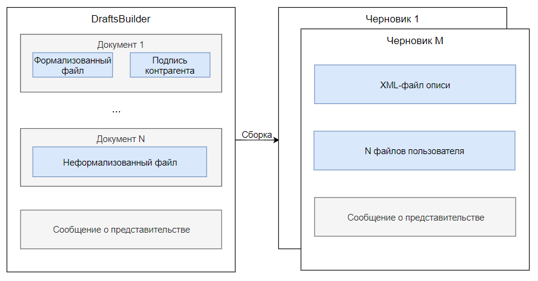

DraftsBuilder¶
Что такое DraftsBuilder¶
Для формирования черновика из переданных документов пользователя создан конструктор черновиков — DraftsBuilder. Он приводит к установленному формату файлы пользователя, строит шаблон из загруженных файлов, подписей контрагентов и сообщения о представительстве (доверенности) и собирает созданный шаблон в черновик.
- DraftsBuilder можно использовать для получения черновиков следующих типов документооборотов:
ответ на требование (urn:docflow:fns534-inventory),
регистрация бизнеса (urn:docflow:business-registration),
отчетность в ПФР (urn:docflow:pfr-report).
Функции DraftsBuilder:
Приводит приложенные файлы к установленному контролирующим органом формату.
Разбивает файлы на черновики.
Подкладывает в каждый черновик сообщение о представительстве, переданное налогоплательщиком.
Задает документам уникальное название.
Формирует XML-файл описи к каждому черновику.
Изменение имен файлов:
- Для ФНС:
Все имена приложений и документов DraftsBuilder приводит к установленному ФНС формату и задает уникальный гуид.
- Для ПФР:
Если имя файла соответствует формату, то оно не изменится. Если имя файла не соответствует формату, то DraftsBuilder переименует файл.
Файл описи в DraftsBuilder¶
Для некоторых документооборотов налогоплательщик должен соблюдать требования к составу отправляемых документов в налоговый орган. В составе должен быть файл описи, в котором перечислены документы пользователя. DraftsBuilder формирует этот файл самостоятельно.
Файл описи в DraftsBuilder — это XML-файл с перечислением документов, которые налогоплательщик отправляет в налоговый орган. Это формализованный файл установленного формата, формируется в DraftsBuilder автоматически на основании всех переданных файлов.
В случае использования DraftsBuilder для получения черновика ответа на требования XML-файл описи будет состоять из списка документов с привязкой пункта требования, в документах будут перечислены файлы для налогового органа и подписи.
- Замечание про подписи
Существует два вида подписи: подпись контрагента, которая подкладывается к формализованным файлам, и подпись отправителя. Подпись контрагента нужно подписывать КЭП отправителя описи, так же как и остальные файлы черновика перед отправкой.
Структура DraftsBuilder¶
В DraftsBuilder можно положить файлы (документы, представленные в виде скан-образа) с расширением: jpg, png, pdf, tif, tiff. Один черновик описи может содержать до 99 файлов и быть объемом не более 60 Мб. Если суммарный объем приложенных файлов будет больше 60 Мб, или пользователь приложит большее количество, DraftsBuilder сам разделит их на несколько черновиков. Черновики будут отправлены как отдельные документообороты.
- Замечание про документы и файлы
Нужно разделять сущности документа и файла в DraftsBuilder. Налогоплательщик предоставляет документы в налоговый орган. Документ может состоять из нескольких файлов. В DraftsBuilder документ является контейнером для файлов. Файл — это файл пользователя, который он отправляет в налоговый орган в составе документа. Файлы могут быть формализованные и неформализованные,подробнее читайте в справке.
В один документ-контейнер можно положить:
один или несколько файлов одного неформализованного документа,
формализованный файл и подпись контрагента,
титульные страницы формализованного документа с подписями контрагента.
Процесс работы с DraftsBuilder¶
Создание DraftsBuilder методом POST CreateDraftsBuilder
Метод создает шаблон черновика. В результате метод вернет идентификатор созданного шаблона DraftsBuilder и все его содержимое.
При создании обязательно заполнить метаинформацию DraftsBuilder, в ней необходимо указать тип DraftsBuilder
Добавление документа POST CreateDraftsBuilderDocument
Чтобы добавить файлы, необходимо сначала добавить для них контейнер — документ. Вызываем столько раз, сколько документов передает пользователь.
Добавление файла POST CreateDraftsBuilderDocumentFile
Метод создает файл в документе. Вызываем столько раз, сколько файлов нужно положить в документ-контейнер.
Сбор DraftsBuilder POST BuildDrafts
Метод собирает все добавленные файлы и документы DraftsBuilder шаблона в черновики. В результате метод вернет идентификаторы черновиков, в каждом из которых находится: XML-файл описи, файлы, сообщение о представительстве (если есть).
Для редактирования содержимого DraftsBuilder смотрите описание методов.
Чтобы предотвратить появление коллизий, в работе методов предусмотрены ограничения — блокировки.